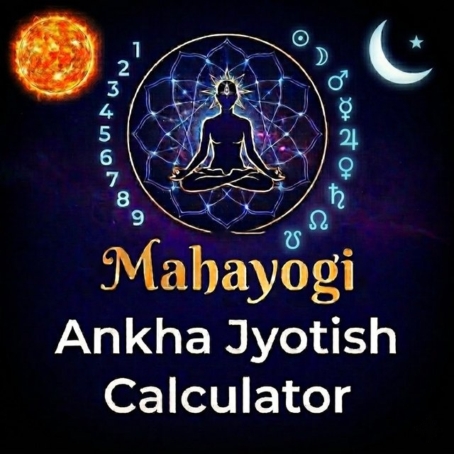

Ask a question, choose a number, and receive a Mahayogi Ankha Jyotish chart for the moment you asked.
Opening soonA question asked sincerely already carries its answer.
This is the principle behind Prashna, the branch of Vedic astrology that reads a chart for the moment a question is asked, instead of the moment of birth. You don't need a birth time or a birth chart, only a real question.
Mahayogi Ankha Jyotish is a number-based form of Prashna that unites numerology and Jyotish. Instead of using the clock, it draws the chart from a number you choose. That number is your own point of contact with the moment. The chart is then interpreted and read by an AI according to the classical rules of Vedic astrology, plus a few additional rules, used only when needed, for planetary arrangements unique to this system.
Why not just ask AI?
- AI chats often get the chart calculation wrong. The Calculator doesn't.
- No fuss, no muss. Ask, copy, paste. Done before your coffee cools.
- Casts a chart for your specific question, not a whole-life reading — a fine-tuned perspective on your present circumstances and probable future outcomes.
- Keeps the AI on track. AI can get creative. We like to keep it real.
- No birth time needed, no guesswork.
- Nothing personal to hand over.
- Built on the foundation of classical Prashna, with a lifetime of practice behind it — and you can see the charts.
- Readings are in plain everyday language — no "interpreters" needed.
The Calculator does the work for you
- Type your question and choose a number from 1 to 108, called your Alpha number. The Calculator uses it to create the charts for your question.
- It works out the signs and houses, the planets that stand for you and for the matter you asked about, their strength and condition, and the deeper divisional chart that shows how things will ripen.
- With one tap, the finished chart and its reading instructions are copied, ready to paste into Gemini, ChatGPT, Perplexity, or any AI you like. The AI then writes your reading in plain language.
Use it for the questions life actually brings: work, relationships, a move, a decision you can't settle. The Calculator offers guidance, not certainty, and it is not a substitute for medical, legal or financial advice. Always use your own common sense with any answer.
Your first question is free. After that: $5 for one question, $12 for five, or $19 a month for up to 20. See pricing.
Opening soon